Hidaka
Hidakacho · Hokkaido
Hidakacho
Highlighted on the Hokkaido map.
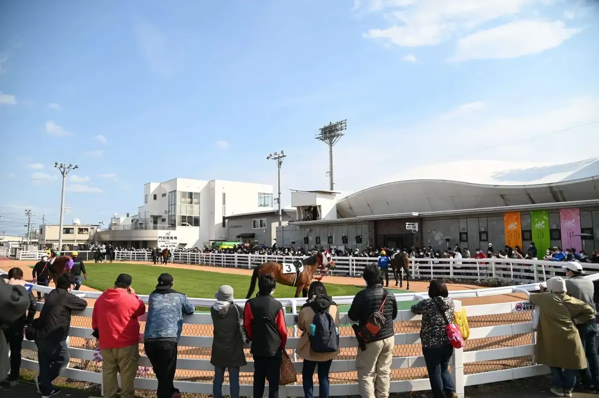
Stay
富川シティホテル
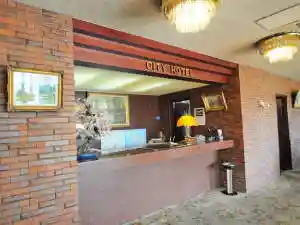
Tomikawa Shiteihoteru
民宿アンナプルナ
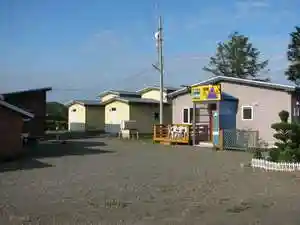
Minshuku Annapuruna
ひだか高原荘
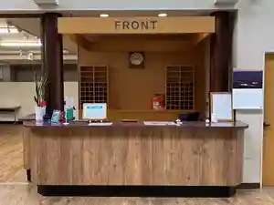
Hidaka Kougen Sou
noie hidaka ノイエヒダカ
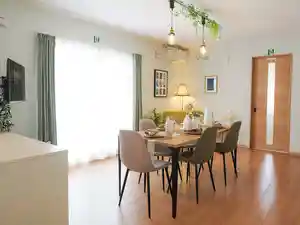
Noie Hidaka Noiehidaka
Dining
西陣
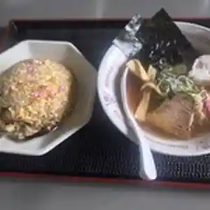
Nishijin
新沼旅館

Niinuma Ryokan
うま八

Uma Hachi
焼肉のんき
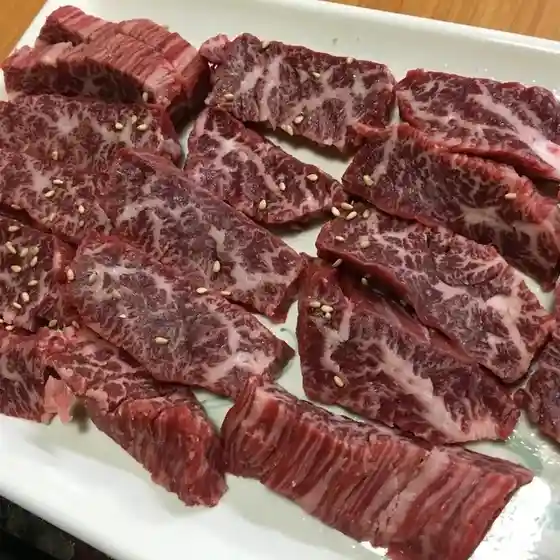
Yakiniku Nonki
萃龍
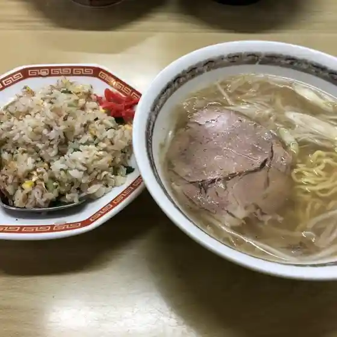
Sui Ryuu
日本橋
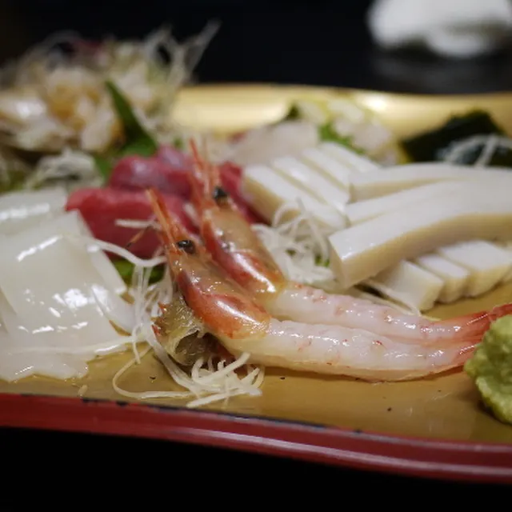
Nihonbashi
セイコーマート 門別厚賀店
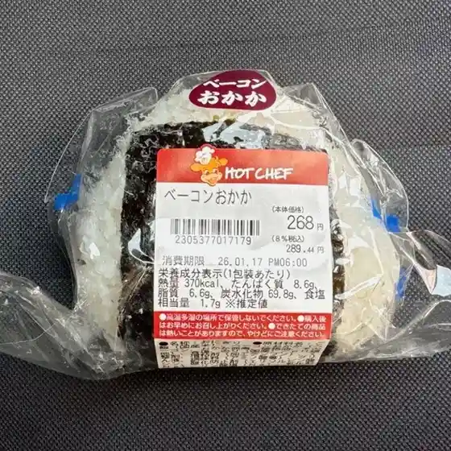
Seikoomaato Monbetsu Atsushi Ga Mise
ラーメン かわぶち
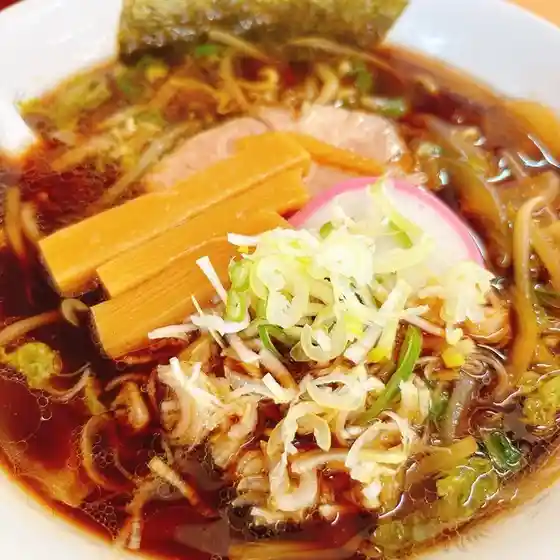
Raamen Kawabuchi
酒と肴 碧
Sake To Sakana Heki
そば太郎
Soba Tarou
ハナマル
Hanamaru
つぼ八 富川店
Tsubo Hachi Tomikawa Mise
鳥天焼肉
Toriten Yakiniku
グリル品川
Guriru Shinagawa
ふじかみ
Fujikami
中華料理 五行山
Chuukaryouri Gogyou Yama
民宿アンナプルナ
Minshuku Annapuruna
とねっこジンギスカン
Tonekko Jingisukan
マックスバリュ 富川店
Makkusubaryu Tomikawa Mise
すいしん
Suishin
焼肉ハウスリン
Yakiniku Hausurin
高沙荘
Taka Sa Sou
いこい食堂
Ikoi Shokudou
味処 さくら亭
Ajidokoro Sakura Tei
Sights
Mombetsu Keibajo
Mombetsu Keibajo